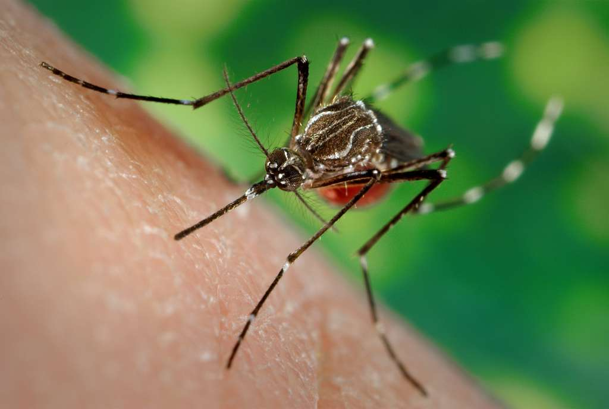

Tratamiento | Tipo de territorio | Supervivencia |
|---|---|---|
Control | prístino | 77.2 |
Pesticida_A | prístino | 58.8 |
Pesticida_B | prístino | 57.8 |
Control | uso humano medio | 80.4 |
Pesticida_A | uso humano medio | 60.6 |
Pesticida_B | uso humano medio | 58.6 |
Control | muy alterado | 82.3 |
Pesticida_A | muy alterado | 53.7 |
Pesticida_B | muy alterado | 46.6 |
Control de Larvas de mosquitos
ejercicio

Situación de investigación
Queremos evaluar el efecto de tres pesticidas sobre la supervivencia de larvas de Aedes aegipty. Estamos ensayando el pesticida en una zona en donde sabemos que existen distinta historia de exposición a contaminantes, lo que sospechamos puede afectar su respuesta. Desafortunadamente poco sabemos de los detalles de esas historias de exposición previa por lo que la consideramos como una fuente de variabilidad un poco compleja y no medible.
Ideas de diseño
Los Tratamientos
ControlA: Mezcla deBacillus thuringiensis,Beauveria bassiana,Peacelomyces fumorosaeB: Temefos
En la zona de interés se sabe que hay tres grandes territorios. Uno prácticamente en estado natural, seguramente con muy baja exposición a agroquímicos de todo tipo. Hay otra gran proporción del lugar que se dice ha estado medianamente expuesta y finalmente, hay otro territorio muy afectado por actividades humanas que seguramente lo ha expuesto a una larga historia de uso de agroquímicos.
El estudio se realizó de la siguiente manera. Se capturaron en cada lugar 100 adultos de Aedes aegipty. Se llevaron esos mosquitos al laboratorio, en donde se les mantuvo en condiciones homogéneas. Se les ofrecieron contenedores de agua limpia, apropiados para su reproducción. Así se obtuvieron 50 larvas producidas por los adultos colectados en cada lugar y se expusieron a cada tratamiento. Finalmente, se tomó nota de la supervivencia resultante al cabo de 48 horas.
Estos son los resultados que se obtuvieron de este ensayo.
Para este ejercicio utiliza por favor la opción de crear tu reporte como un Quarto Document. Propongo esto como un ejercicio introductorio. Espero que puedas valorar así el gran potencial que esto está adquiriendo, pues como puedes ver aquí, podrías escribir tus artículos directamente con Quarto. Pero para empezar, te podría interesar más bien este tutorial introductorio. Si sientes que antes o además de entender eso de Quarto, te gustaría saber más sobre R, te sugiero este material básico.
En todo caso, mi idea es animarte a brincar al agua. Sigue la figura de abajo y tendrás un embrión de documento listo para que hagas con él lo que tú quieras. Básicamente escribir libremente y de vez en vez, cuando tengas que hacer operaciones con R podrás abrir un espacio para eso (¡un chunk!). En RStudio lo puedes hacer con ayuda del botón verde que está arriba como a la mitad de la pantalla, tien un signo “+” y una “C”, seguramente de chunk. Eso es todo para empezar. Si quieres “ver en bonito”, lo que has escrito, tienes que apreta el botón Render. Normalmente pasará un momento y te llevará al browser para mostrate lo que has escrito como una pagina web de tu creación. Al mismo tiempo habrá creado en tu carpeta de trabajo un archivo html con el nombre que le hayas dado al inicio.

¿Cómo desarrollar el trabajo?
Como sugerencia para ayudarte a desarrollar tus ideas te ofrezco los siguientes puntos a considerar.
- ¿Diseño experimental?
- ¿Arreglo de tratamientos?
- ¿Modelo que corresponde a este experimento?
- ¿Supuestos que harás para apoyar tu análisis estadístico?
- ¿Define tu criterio o nivel de significancia?
- Realiza una exploración de los datos, numérica y gráfica, comenta.
- Construye los modelos necesarios y selecciona el mínimo adecuado.
- Valora la calidad del modelo, incluyendo el análisis de los residuos.
- Resuelve que tratamientos difieren de los demás.
- Argumenta tus conclusiones.
- Incluye ilustraciones apropiadas y elocuentes para apoyar tus hallazgos